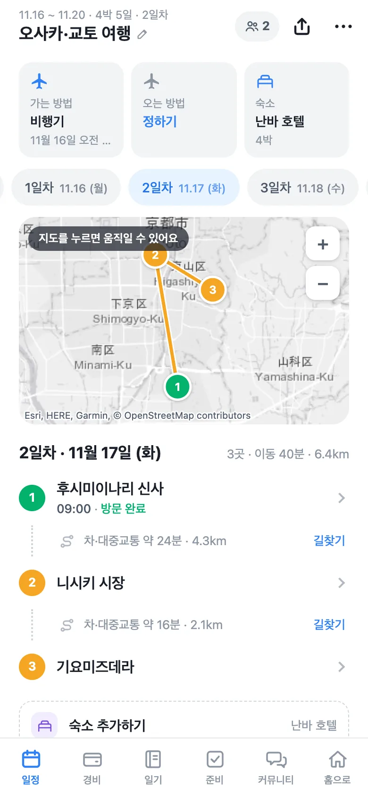
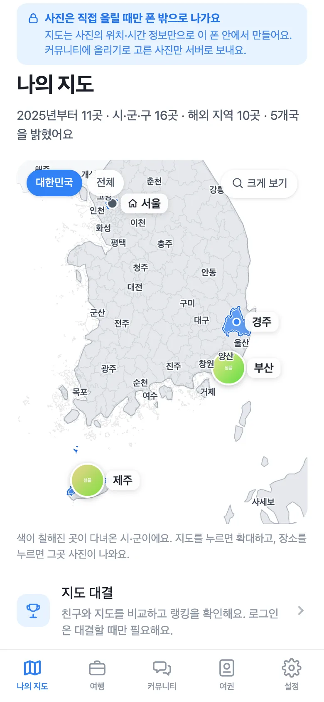
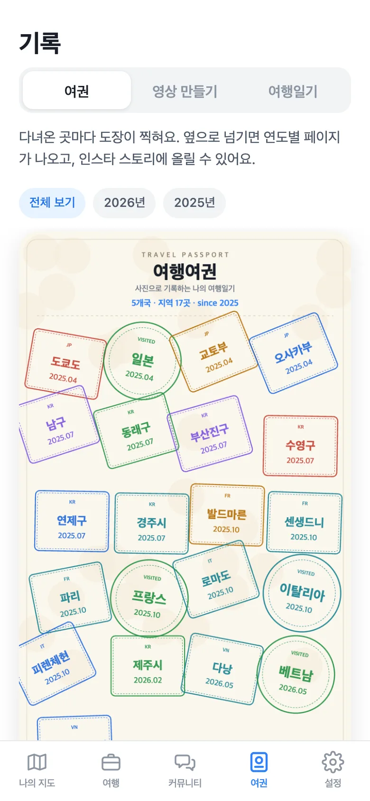
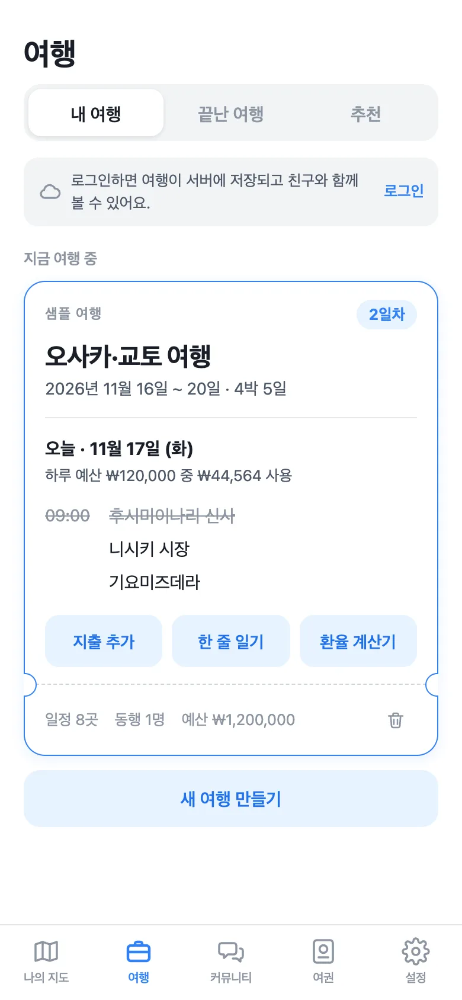
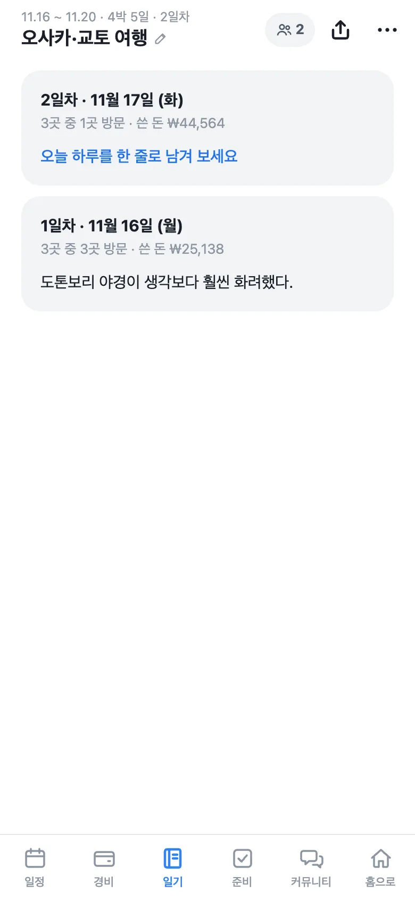
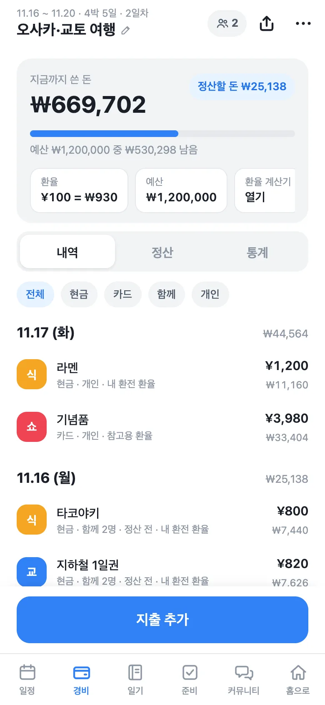
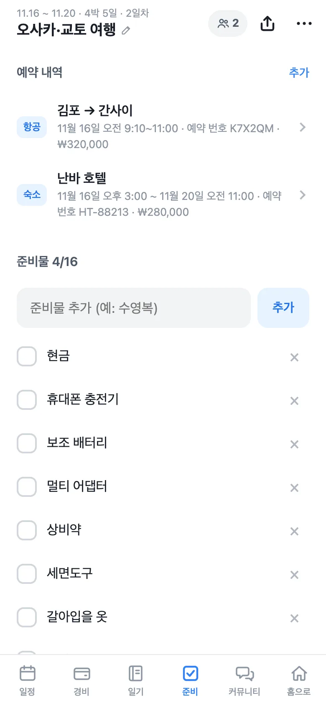
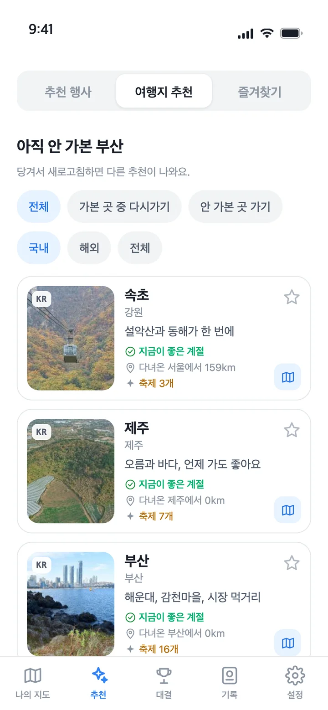
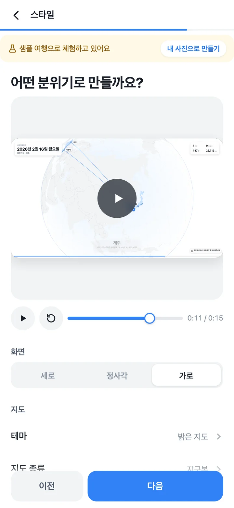

여행지·행사 추천
가본 곳과 아직 안 가본 곳을 둘러보고, 계절에 어울리는 여행지와 축제를 찾아 즐겨찾기에 담아요.
사진으로 돌아보고, 계획으로 이어가는 여행
사진 속 위치와 시간으로 나의 여행 지도를 채워요. 다음 여행의 일정·경비·일기도 같은 앱에서 이어가요.
iPhone·iPad·Android에서 무료로 받을 수 있어요. 광고가 있고, 프리미엄은 한 번만 구매해요.


여행의 앞과 뒤를 한곳에
여행여권은 사진으로 만드는 나의 지도와 여권 도장, 여행 일정·경비·일기, AI 일정 도우미, 여행 커뮤니티, 여행지 추천과 여행 영상을 하나의 앱에 담았어요.
여행여권의 약속
내 기록은 내 폰에서 시작해요
3가지 약속
지도와 여권은 사진의 위치·시간 정보로 기기 안에서 만들어요. 사진은 커뮤니티에 직접 올릴 때만 폰 밖으로 나가요.
지도·여권·영상·여행 계획은 가입 없이 쓸 수 있어요. 로그인은 함께 보기, 커뮤니티 글쓰기처럼 필요한 기능에서만 해요.
여행 계획은 폰에 먼저 저장돼요. 연결이 끊긴 여행지에서도 일정과 지출을 적고, 로그인했다면 연결됐을 때 서버에 올라가요.
나의 지도·여권
사진 속 위치를 모아 국내 시·군·구와 해외 지역을 지도에 칠해요. 다녀온 나라와 지역은 여권 도장으로 차곡차곡 쌓여요.

여행 계획
여행을 만들면 날짜별 일정, 지도 위 동선, 예약 내역과 준비물이 한 여행 안에 모여요. 오늘 할 일은 여행 카드에서 바로 보여요.

경비·일기
현지 통화로 적으면 원화로 얼마인지 바로 보여요. 함께 쓴 돈은 누가 얼마를 주고받으면 되는지 계산해 줘요.


AI 일정 도우미
누구와 가는지, 얼마나 빡빡하게 다닐지, 하고 싶은 것과 경비를 대화로 물어봐요. 고르기만 해도 되고 직접 적어도 돼요.
커뮤니티
여행 일정을 통째로 공유하고, 같이 갈 사람을 찾고, 다녀온 곳을 자랑해요. 글은 로그인 없이 읽을 수 있고 PC에서도 쓸 수 있어요.
미리 보기
옆으로 넘겨서 9장의 화면을 볼 수 있어요



이런 것도 있어요
가본 곳과 아직 안 가본 곳을 둘러보고, 계절에 어울리는 여행지와 축제를 찾아 즐겨찾기에 담아요.
여행과 날짜를 고르고 지도 스타일과 자막을 더해요. 세로·정사각·가로 비율로 만들어 공유해요.
초대 링크를 보내 서로 다녀온 지역과 여행 통계를 비교해요. 다음에 함께 갈 곳을 찾아도 좋아요.
예약 사이트의 숙소 링크를 모아 이름·사진·가격을 나란히 놓고 골라요. 가격은 참고 값이에요.
전자항공권이나 예약 확인서를 올리면 기기 안에서 글자를 읽어 예약 내역을 채워요.
앱 화면은 샘플 여행으로 찍은 예시예요. 추천 결과는 달라질 수 있고, 지구본 등 일부 영상 스타일은 프리미엄 기능이에요.
지금 바로 펼쳐보세요
App Store와 Google Play에서 무료로 받을 수 있어요.
App Store
Google Play
문의·도움말
기본 여행 분석은 기기 안에서 처리하며, 지도를 만드는 데 쓰는 사진 원본과 상세 위치·시간 기록은 서버에 업로드하지 않아요. 로그인해서 쓰는 온라인 기능에서는 직접 고르거나 적은 내용만 서버에 저장돼요. 지도 대결은 계정 정보와 방문 지역·여행 통계를, 여행 탭은 내가 만든 여행 계획을, 커뮤니티는 내가 올린 글과 사진을 저장해요. 커뮤니티에 올린 글과 사진은 누구나 볼 수 있고, 사진은 위치 정보 없이 올라가요. 자세한 내용은 개인정보처리방침에서 확인할 수 있어요.
사진에 촬영 위치와 시간 정보가 있어야 여행을 만들 수 있어요. 위치 정보가 없는 사진이나 집 근처 사진만 선택했다면 여행이 표시되지 않을 수 있어요. 앱 설정에서 사진 접근 권한을 확인해주세요.
앱은 무료로 받을 수 있고 광고가 포함돼요. 기본 영상은 1080p로 만들 수 있어요. 프리미엄은 1회 구매이며, 광고 제거와 어두운 테마, 지구본, 추가 지도·카메라 스타일, 해상도 옵션을 제공해요. AI 일정 도우미는 계정마다 3번까지 무료이고 그 뒤에는 프리미엄이 있어야 계속 쓸 수 있어요.
아니요. 지도·여권·영상·여행 계획은 로그인 없이 쓸 수 있어요. 여행을 여러 기기에서 이어 쓰거나 동행과 함께 보기, AI 일정 도우미, 지도 대결, 커뮤니티 글쓰기에만 Google·카카오·Apple 로그인이 필요해요.
참고용 초안이에요. 운영 시간, 이동 시간, 예상 경비는 실제와 다를 수 있으니 가기 전에 직접 확인해 주세요. 받은 일정은 채팅으로 고치거나 직접 손볼 수 있어요.
네, iPhone·iPad는 App Store에서, Android는 Google Play에서 무료로 받을 수 있어요. 프리미엄은 구매한 스토어 계정에 연결돼요.
앱의 설정 › 계정 › 회원 탈퇴, 웹 커뮤니티의 내 계정 › 회원 탈퇴에서 바로 삭제할 수 있어요. 앱 없이 삭제하려면 계정 삭제 페이지에서 같은 계정으로 로그인해 주세요.
사용 중 문제, 기능 제안, 개인정보 관련 요청은 hi@hueeng.com으로 보내 주세요.